Fundamental Physical Constants
| Name | Symbol | Value |
| Speed of light | c | 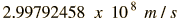 |
| Planck constant | h | 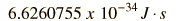 |
| Planck constant | h |  | | Planck hbar | 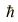 | 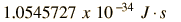 | | Planck hbar | | 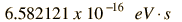 |
| Gravitation constant | G | 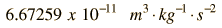 |
| Boltzmann constant | k | 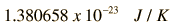 |
| Boltzmann constant | k | 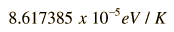 |
| Molar gas constant | R | 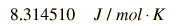 |
| Avogadro's number | NA | 6.0221 x 1023 mol-1 |
| Charge of electron | e | 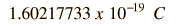 |
| Permeability of vacuum | 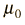 | 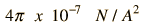 |
| Permittivity of vacuum | 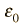 | 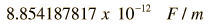 |
| Coulomb constant | 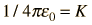 | 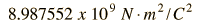 |
| Faraday constant | F | 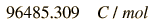 |
| Mass of electron | 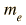 | 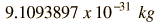 |
| Mass of electron | |  |
| Mass of proton | 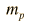 | 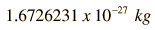 |
| Mass of proton | | 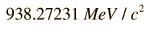 |
| Mass of neutron |  | 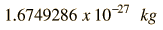 |
| Mass of neutron | | 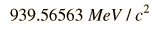 |
| Atomic mass unit | u |  |
| Atomic mass unit | u |  |
| Avogadro's number | 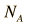 | 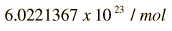 |
| Stefan-Boltzmann constant | 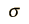 | 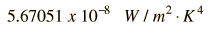 |
| Rydberg constant | 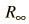 |  |
| Bohr magneton | 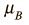 | 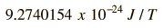 |
| Bohr magneton | | 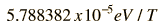 |
| Flux quantum | 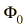 | 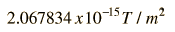 |
| Bohr radius | 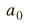 | 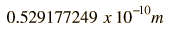 |
| Standard atmosphere | atm | 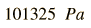 |
| Wien displacement constant | b | 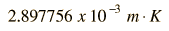 |
|
Index
Tables

NIST Tables |